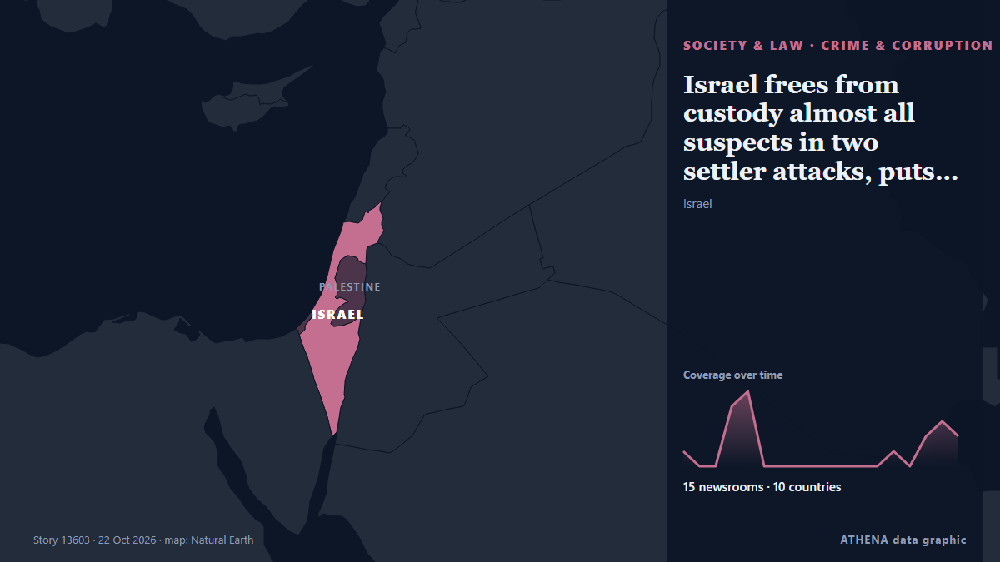

Israel frees from custody almost all suspects in two settler attacks, puts them under house arrest

JERUSALEM, Oct 22 - Nine of the 10 suspects arrested in an investigation into militant settler attacks on a US journalist and European diplomats have been released from custody and placed under house… من The Straits Times
نشرته بشكل مستقل 15 مصدرًا في 10 دول منذ 18 أكتوبر، وأول من نشره CGTN (World)؛ والتغطية تتراجع. يقدّر ATHENA الخطر بأنه معتدل (2.5/10)، ويعود ذلك أساسًا إلى خطورة الضرر الموصوف ونطاقه الجغرافي والقطاعي. الثقة 88٪ (مرتفعة)، وعدد المصادر المستقلة المؤكِّدة: 15، بمتوسط موثوقية للمصادر يبلغ 80٪. من نقل الخبر: 3 وسائل إعلام في إسرائيل · Israel, 3 وسائل إعلام في الولايات المتحدة · United States, 2 وسائل إعلام في الصين · China. امتدت التغطية من 18 أكتوبر إلى 22 أكتوبر، على مدى 106 ساعة.
لماذا يهم: تتابع هذه الصفحة النزاع الذي يشمل إسرائيل وغزة والضفة الغربية ولبنان — التطورات العسكرية والوضع الإنساني والدبلوماسية — كما تغطيه وسائل الإعلام حول العالم.
ما الذي تغيّر: 8 تقارير جديدة من 8 غرف أخبار خلال 24 ساعة حتى 22 أكتوبر.
تُعرض العناوين بالإنجليزية كما نُشرت.
نظرة سريعة
اختير وقُيِّم وكُتب وفق منهجية ATHENA المنشورة. لا يتدخل أي محرر في الأحداث بعينها. كيف يُنتَج ›
| 18 Oct 08:33 UTC | 1 |
|---|---|
| 18 Oct 14:33 UTC | 0 |
| 18 Oct 20:33 UTC | 0 |
| 19 Oct 02:33 UTC | 4 |
| 19 Oct 08:33 UTC | 5 |
| 19 Oct 14:33 UTC | 0 |
| 19 Oct 20:33 UTC | 0 |
| 20 Oct 02:33 UTC | 0 |
| 20 Oct 08:33 UTC | 0 |
| 20 Oct 14:33 UTC | 0 |
| 20 Oct 20:33 UTC | 0 |
| 21 Oct 02:33 UTC | 0 |
| 21 Oct 08:33 UTC | 0 |
| 21 Oct 14:33 UTC | 1 |
| 21 Oct 20:33 UTC | 0 |
| 22 Oct 02:33 UTC | 2 |
| 22 Oct 08:33 UTC | 3 |
| 22 Oct 14:33 UTC | 2 |
| 19 Oct 15:50 UTC | 0.0 |
|---|---|
| 19 Oct 15:51 UTC | 2.4 |
| 22 Oct 18:17 UTC | 2.5 |
لماذا هذه الأرقام
الأهمية
الخطر
الثقة
التغطية — من نشر الخبر ومتى
العنوان كما نُشر · يفتح الأصل- CGTN (World) · الصين · ChinaSettler violence in West Bank draws international condemnation
- Sky News (World) · المملكة المتحدة · United KingdomArrests over Israeli settler attacks on US photojournalist and European diplomats in West Bank
- Haaretz (English) · إسرائيل · IsraelTen arrested in connection with settler attacks on European diplomats and press photographer
- The Jerusalem Post · إسرائيل · IsraelIDF, Shin Bet arrest 10 suspects connected to attack on US journalist, EU diplomats in West Bank
- DW English · ألمانيا · GermanyWest Bank: Israel arrests 10 suspects over settler attacks on US journalist, European diplomats
- ABC News Australia · أستراليا · AustraliaIsrael police arrest suspects over settler attacks
- NBC News (World) · الولايات المتحدة · United StatesIsraeli police arrest 10 after series of West Bank settler attacks
- The New Arab · INTIsrael arrests 10 over settler attacks amid record of impunity
- CGTN (World) · الصين · ChinaIsrael arrests 10 over attacks on US journalist, European diplomats
- CBS News (World) · الولايات المتحدة · United StatesU.S. lauds Israel for arresting 10 over West Bank settler attacks
- Haaretz (English) · إسرائيل · IsraelNine of 10 suspects in attacks on diplomats, U.S. journalist released
- Türkiye Today · تركيا · TurkeyMost West Bank attack suspects freed as officials warn of settler surge
- Dawn · باكستان · PakistanSuspects in West Bank settler attacks put under house arrest
- The Straits Times · سنغافورة · SingaporeIsrael frees from custody almost all suspects in two settler attacks, puts them under house arrest
- Middle East Eye · INTIsraeli settlers suspected of attacking journalist and diplomats released: Press review
- Al-Monitor · الولايات المتحدة · United StatesIsrael frees from custody almost all suspects in two settler attacks, puts them under house arrest
- The New Arab · INTBen-Gvir arms more West Bank settlers ahead of Israeli elections
- Al Jazeera English · قطر · QatarIsrael frees suspects in two settler attacks as West Bank pogroms intensify